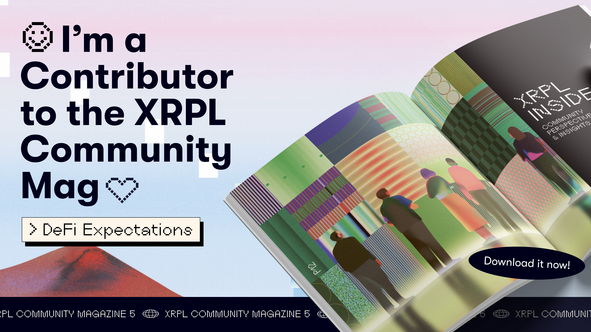

Resilient Systems
Microservices, event-driven architectures, and distributed pipelines designed to handle real-world scale and failure modes.

Senior Backend Engineer | Architecting Resilient Distributed Systems & Production AI | Building Trust via Smart Contracts
Montreal, Quebec, Canada
Senior Software Engineer specializing in scalable, production-ready systems. I architect backend infrastructure that makes AI reliable and blockchain trustworthy — scaling microservices, distributed systems, and intelligent pipelines that drive real impact. Over 9+ years, I've built production systems across fintech, healthcare, logistics, and climate tech.
Microservices, event-driven architectures, and distributed pipelines designed to handle real-world scale and failure modes.
Backend pipelines, data systems, and deployment layers that make LLMs and agentic AI reliable at scale — not just demos.
Smart contracts and decentralized protocols that solve real identity, certification, and supply-chain trust problems.
Contributing to academic research in AI, mobility data quality, and vocational education through international collaborations.
Interactive AI-powered vocational learning platform with gamified missions, micro-credentials, and blockchain-verified certifications.
gamevoc.africa →Led migration from monolith to cloud-hosted microservices — enabling 10× traffic scale with Kafka, gRPC, MongoDB, and Redis.
cribmd.com →Real estate and property technology platform bringing transparency and digital infrastructure to African housing markets.
houseafrica.io →Co-founded a microservice-based bus booking aggregator and metasearch engine — Apollo Federation, GraphQL, Kafka on AWS.
NFT marketplace backend for carbon tree tokens, spatial data optimization, and AI integration via FastAPI on GCP.
Smart contracts for E-Cert, MFSSIA identity protocol, logistics blockchain digital twin — Solidity, Polygon, EigenLayer, IPFS.
Research publications in software engineering, AI systems, and distributed computing.
View citations →
Featured contributor in DeFi Expectations, documenting innovations from the XRPL Commons Aquarium Program including programmable IP rights and DeFi on XRPL.
Read the magazine →BusPas Inc.
Building MAS-DQA: a multi-agent framework for verifiable data quality governance in real-time mobility streams.
DryvAfrica
Co-founded and engineered a microservice-based bus booking aggregator platform and metasearch engine.
Dymaxion OÜ
XRPL Commons
Selected for DeFi innovations on XRPL — tokens, liquidity pools, hooks, and co-architecting RYTU (programmable IP rights layer).
GreenAnt
NFT marketplace backend for carbon trees, spatial data optimization, and AI model integration.
CribMD
Led monolith-to-microservices migration enabling 10× traffic scale with Kafka and gRPC.
Dynamic Flakes Limited
Led team of 3 engineers; Elasticsearch faceted search, e-commerce platform, legacy migration.
Polytechnique Montréal
2026 — 2028
SE4AI CREATE Graduate Fellow (NSERC-funded), Engineering AI-based Software Systems
University of Nigeria, Nsukka
2007 — 2012
Open to research collaborations, senior engineering roles, and impactful backend architecture work.